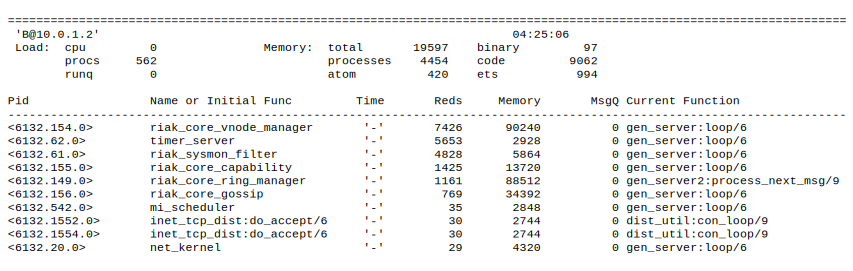

This is a work in progress, and should be treated as such. General redaction ensues: facts are being verified, texts are being edited, jokes are being made funny.
Riak is an open-source, distributed key/value database for high availability, fault-tolerance, and near-linear scalability. It's a mouthful, that basically means Riak has high uptime, and grows with you.
In an increasingly interconnected world, major shifts have occurred in data management. The web and connected devices have spurred an explosion of both data collection and access unseen in the history of the world. The amount of data being stored and managed has grown at a staggering rate, and in parallel, more people than ever require fast and reliable access to this data. This is generally called Big Data.
There's a lot of discussion around what constitutes Big Data.
I have a 6 Terabyte RAID in my house to store videos and other backups. Does that count? On the other hand, CERN grabbed about 200 Petabytes looking for the Higgs boson.
It's a hard number to pin down, because Big Data is a personal figure. What's big to one might be small to another. Ths is why many definitions don't refer to byte count at all, but instead about relative potentials. A reasonable, albeit wordy, definition of Big Data is given by Gartner.
Big Data are high-volume, high-velocity, and/or high-variety information assets that require new forms of processing to enable enhanced decision making, insight discovery and process optimization.
The sweet spot of Riak is high-volume (data that's available to read and write when you need it), high-velocity (easily responds to growth), and high-variety information assets (you can store any type of data as a value).
Riak was built as a solution to real Big Data problems, based on the Amazon Dynamo design. Dynamo is a highly available design---meaning that it responds to requests quickly at very large scales, even if your application is storing and serving terabytes of data a day. Riak had been used in production prior to being open-sourced in 2009. It's currently used by Github, Comcast, Voxer, Disqus and others, with the larger systems storing hundreds of TBs of data, and handling several GBs per node daily.
Riak was written on the Erlang programming language. Erlang was chosen due to its strong support for concurrency, solid distributed communication, hot code loading, and fault-tolerance. It runs on a virtual machine, so running Riak requires you also have Erlang installed.
So should you use Riak? A good rule of thumb for potential users is to ask yourself if every moment of downtime will cost you in some way (money, users, etc). Not all systems require such extreme amounts of uptime, and if you don't, Riak may not be for you.
This is not an "install and follow along" guide. This is a "read and comprehend" guide. Don't feel compelled to have Riak, or even have a computer handy, when starting this book. You may feel like installing along at some point, and if so, instructions can be found on the Riak docs.
In my opinion, the most important section of this book is the concepts chapter. If you already have a little knowledge it may start slow, but it picks up in a hurry. After laying the theoretical groundwork, we'll move onto helping developers use Riak, by learning how to query it and tinker with some settings. Finally, we'll go over the basic details that operators should know, such as how to set up a Riak cluster, configure some values, reading logs, and more.
When I first encountered Riak, I found a few concepts daunting. But understanding these theories made me appreciate the difficulty of the distributed database problem space, and the elegant solutions provided by Riak.
Before we understand where Riak sits in the spectrum of databases, it's good to have a little front matter. The existence of databases like Riak is the culmination of two things: accessible technology spurring different data requirements, and gaps in the data management market.
First, as we've seen steady improvements in technology along with reductions in cost, vast amounts of computing power and storage are now within the grasp of nearly anyone. Along with our increasingly interconnected world caused by the web and shrinking, cheaper computers (like smartphones), this has catalyzed an exponential growth of data, and a demand for more predictability and speed by savvier users. In short, more data is being created on the front-end, while more data is being managed on the backend.
Second, relational database management systems (RDBMS) had become fine tuned over the years for a set of use-cases like business intelligence. They were also technically tuned for things like optimizing disk access, and squeezing performance out of single larger servers, even while cheap commodity (or virtualized) servers made horizontal growth increasingly attractive. As cracks in relational implementations became apparent, custom implementations arose in response to specific problems not originally envisioned by the relational DBs.
These new databases are loosely called NoSQL, and Riak is of its ilk.
Modern database can be loosely grouped into the way they represent data. Although I'm presenting 5 major types (the last 4 are considered NoSQL models), these lines are often blurred---you can use some key/value stores as a document store, you can use a relational database to just store key/value data.
Unlike relational databases, but similar to document and columnar stores, objects cannot be joined by Riak. Client code is responsible for accessing values and merging them, or by other code such as mapreduce.
The ability to easily join data across physical servers is a tradeoff that separates single node databases like relational and graph, from naturally partitionable systems like document, columnar, and key/value stores.
This limitation changes how you model data. Relational normalization (organizing data to reduce redundancy) exists for systems that can cheaply join data together per request. However, the ability to spread data across multiple nodes requires a denormalized approach, where some data is duplicated, and computed values may be stored for the sake of performance.
Relational. Traditional databases usually use SQL to model and query data. They are most useful for data which can be stored in a highly structured schema, yet require query flexibility. Scaling a relational database (RDBMS) traditionally occurs by more powerful hardware (vertical growth).
Examples: PostgreSQL, MySQL, Oracle
Graph. These exist for highly interconnected data. They excel in modeling complex relationships between nodes, and many implementations can handle multiple billions of nodes and relationships (or edges and vertices). I tend to include triplestores and object DBs to be specialized variants.
Examples: Neo4j, Graphbase, InfiniteGraph
Document. Document datastores model hierarchical values called documents, represented in formats such as JSON or XML, and do not enforce a document schema. They generally support distributing across multiple servers (horizontal growth).
Examples: CouchDB, MongoDB, Couchbase
Columnar. Popularized by Google's BigTable, this form of database exists to scale across multiple servers, and groups like data into column families. Column values can be individually versioned and managed, though families are defined in advance, not unlike an RDBMS schema.
Examples: HBase, Cassandra, BigTable
Key/Value. Key/Value, or KV stores, are conceptually like hashtables, where values are stored and accessed by an immutable key. They range from single-server varieties like Memcached used for high-speed caching, to multi-datacenter distributed systems like Riak Enterprise.
Examples: Riak, Redis, Voldemort
Riak is a Key/Value (KV) database, built from the ground up to safely distribute data across a cluster of physical servers, called nodes. A Riak cluster is also known as a Ring (we'll cover why later).
For now, we'll only consider the parts required to use Riak. Riak functions similar to a hashtable. Depending on your background, you may instead call it a map, or dictionary, or object. But the concept is the same: you store a value with an immutable key, and retrieve it later.
If Riak were a variable that functioned as a hashtable, you might set the value of your favorite food using the key favorite.
hashtable["favorite"] = "pizza"
And retrieve the value pizza by using the same key as before.
food = hashtable["favorite"] // food == "pizza"
One day you burn the roof of your mouth. In anger, you update your favorite food to cold pizza.
hashtable["favorite"] = "cold pizza"
Successive requests for favorite will now return cold pizza.
For convenience, we call a key/value pair an object. Together our favorite/pizza pair is referred to as the "favorite object", rather than the more verbose "favorite key and its value".
Buckets are how Riak allows you to categorizes objects. You can group multiple objects into logical collections, where identical keys will not overlap between buckets.
You can think of buckets as namespaces.
Using our favorite example from above, we can specify a favorite food, versus a favorite animal, by using the same key. Unless you're a Midwest farm kid like me, these categories probably won't overlap much.
food["favorite"] = "pizza"
animals["favorite"] = "red panda"
You could have just named your keys edible_favorite and animal_favorite, but buckets allow for cleaner key naming, and has other added benefits that I'll outline later.
Buckets are so useful in Riak that all keys must belong to a bucket. There is no global namespace.
In fact in Riak, the true definition of an object key is actually bucket/key.
Distributing data across several nodes is how Riak is able to remain highly available, while tolerant of outages and network partitions. Riak combines two styles of distribution to achieve this: replication and partitions.
Replication is the act of duplicating data across multiple servers. Riak replicates by default.
The obvious benefit of replication is that if one node goes down, nodes that contain replicated data remain available to serve requests. In other words, the system remains highly available.
For example, imagine you have a list of country keys, whose values contain those countries' capitals. If all you do is replicate that data to 2 servers, you would have 2 duplicate databases.
"Afghanistan": "Kabul"
"Albania": "Tirana"
"Algeria": "Algiers"
...
"Yemen": "Sanaa"
"Zambia": "Lusaka"
"Zimbabwe": "Harare"
"Afghanistan": "Kabul"
"Albania": "Tirana"
"Algeria": "Algiers"
...
"Yemen": "Sanaa"
"Zambia": "Lusaka"
"Zimbabwe": "Harare"
The downside with replication is that you are multiplying the amount of storage required for every duplicate. There is also some network overhead with this approach, since values must also be routed to all replicated nodes on write. But there is a more insidious problem with this approach, which we will cover shortly.
A partition is how we divide a set of keys onto separate physical servers. Rather than duplicate values, we pick one server to exclusively host a range of keys, and the other servers to host remaining non-overlapping ranges.
With partitioning, our total capacity can increase without any big expensive hardware, just lots of cheap commodity servers. If we decided to partition our database into 1000 parts across 1000 nodes, we have (hypothetically) reduced the amount of work any particular server must do to 1/1000th.
For example, if we partition our countries into 2 servers, we might put all countries beginning with letters A-N into Node A, and O-Z into Node B.
"Afghanistan": "Kabul"
"Albania": "Tirana"
"Algeria": "Algiers"
...
"Norway": "Oslo"
"Oman": "Muscat"
...
"Yemen": "Sanaa"
"Zambia": "Lusaka"
"Zimbabwe": "Harare"
There is a bit of overhead the partition approach. Some service must keep track of what range of values live on which node. A requesting application must know that the key Spain will be routed to Node B, not Node A.
There's also another downside. Unlike replication, simple partitioning of data actually decreases uptime. If one node goes down, that entire partition of data is unavailable. This is why Riak combines both replication and partitioning.
[IMAGE]
Since partitions allow us to increase capacity, and replication improves availability, Riak combines them. We partition data across multiple nodes, as well as replicate that data into multiple nodes.
Where our previous example partitioned data into 2 nodes, we can replicate each of those partitions into 2 more nodes, for a total of 4.
"Afghanistan": "Kabul"
"Albania": "Tirana"
"Algeria": "Algiers"
...
"Norway": "Oslo"
"Oman": "Muscat"
...
"Yemen": "Sanaa"
"Zambia": "Lusaka"
"Zimbabwe": "Harare"
Our server count has increased, but so has our capacity and reliability. If you're designing a horizontally scalable system by partitioning data, you must deal with replicating those partitions.
The Riak team suggests a minimum of 5 nodes for a Riak cluster, and replicating to 3 nodes (this setting is called n_val, for the number of nodes on which to replicate each object).
Riak follows the consistent hashing technique, that conceptually maps objects to the edge of a circle or ring. It has the benefit of reducing the amount of data that must be rebalanced when a node goes down.
Riak partitions are not mapped alphabetically (as we used in the examples above), but instead, a partition marks a range of key hashes (SHA-1 function applied to a key). The maximum hash value is 2^160, and divided into some number of partitions---64 partitions by default (the Riak config setting is ring_creation_size).
Let's walk through what all that means. If you have the key favorite, applying SHA-1 would give you dc2b 258d 7221 3f8d 05d1 5973 a66d c156 847b 83f4 in hexadecimal. With 64 partitions, each partition has 1/64 of the 2^160 possible values, making the first partition range from 0 to 2^154-1, the second range is 2^154 to 2*2^154-1, and so on, up to the last partition 63*2^154-1 to 2^160-1.
We won't do all of the math, but trust me when I say favorite falls within the range of partition 3.
If we visualize our 64 partitions as a ring, favorite falls here.
[IMAGE]
You may have wondered, "Didn't he say that Riak suggests a minimum of 5 nodes? How can we put 64 partitions on 5 nodes?" We just give each node more than one partition, which Riak calls a vnode, or virtual node.
We count around the ring of vnodes in order, assigning each node to the next available vnode, until all vnodes are accounted for. So partition/vnode 1 would be owned by Node A, vnode 2 owned by Node B, up to vnode 5 owned by Node E. Then we continue by giving Node A vnode 6, Node B vnode 7, and so on, until our vnodes have been exhausted, leaving us this list.
So far we've partitioned the ring, but what about replication? When we write a new value to Riak, it will replicate the result in some number of nodes, defined by a setting called n_val. In our 5 node cluster it defaults to 3.
So when we write our favorite object to vnode 3, it will be replicated to vnodes 4 and 5. This places the object in physical nodes C, D, and E. Once the write is complete, even if node C crashes, the value is still available on 2 other nodes. This is the secret of Riak's high availability.
We can visualize the Ring with its vnodes, managing nodes, and where favorite will go.
[IMAGE]
The Ring is more than just a circular array of hash partitions. It's also a system of metadata that gets copied to every node. Each node is aware of every other node in the cluster, which nodes own which vnodes, and other system data.
Armed with this information, requests for data can target any node. It will horizontally access data from the proper nodes, and return the result.
So far we've covered the good parts of partitioning and replication: highly available when responding to requests, and inexpensive capacity scaling on commodity hardware. With the clear benefits of horizontal scaling, why is it not more common?
Classic RDBMS databases are write consistent. Once a write is confirmed, successive reads are guaranteed to return the newest value. If I save the value cold pizza to my key favorite, every future read will consistently return cold pizza until I change it.
But when values are distributed, consistency might not be guaranteed. In the middle of an object's replication, two servers could have different results. When we update favorite to cold pizza on one node, another node might temporarily contain the older value pizza. If you request the value of favorite during this replication, two different results can be returned---the database is inconsistent.
We do have an alternative choice. Rather than lose consistency, you could chose to lose availability. We may, for instance, decide to lock the entire database during a write, and simply refuse to serve requests until that value has been replicated to all relevant nodes. Even for that split second time, clients have to wait while their results can be brought into a consistent state (meaning, all replicas will return the same value). For many high-traffic read/write use-cases, like an online shopping cart where even minor delays will cause people to just shop elsewhere, this is not an acceptable sacrifice.
This tradeoff is known as Brewer's CAP theorem. CAP loosely states that you can have a C (consistent), A (available), or P (partition-tolerant) system, but you can only choose 2. Assuming your system is distributed, you're going to be partition-tolerant, meaning, that your network can tolerate packet loss. If a network partition occurs between nodes, your servers still run.
Currently, no setting can make Riak CP in the general case, but a feature for a few strict cases is being researched.
A question the CAP theorem demands you answer with a distributed system is: do I give up strict consistency, or give up total availability? If a request comes in, do I lock out requests until I can enforce consistency across the nodes? Or do I serve requests at all costs, with the caveat that the database may become inconsistent?
Riak's solution is based on Amazon Dynamo's novel approach of a tunable AP system. It takes advantage of the fact that, though the CAP theorem is true, you can choose what kind of tradeoffs you're willing to make. Riak is highly available to serve requests, with the ability to tune its level of A/C tradeoff (nearing, but never quite reaching, full consistency).
Riak allows you to choose how many nodes you want to replicate to, and how many nodes must be written to or read from per request. These values are settings labeled n_val (the number of nodes to replicate to), r (the number of nodes read from before returning), and w (the number of nodes written to before considered successful).
A thought experiment might help clarify.
With our 5 node cluster, having an n_val=3 means values will always replicate to 3 nodes, as we've discussed above. This is the N value. You can set the other values to be all n_val nodes with the shorthand all.
But you may not wish to wait for all nodes to be written to before returning. You can choose to write to all 3 (w=3 or w=all), which means my values are more likely to be consistent, or choose to write only 1 (w=1), and allow the remaining 2 nodes to write asynchronously, but return a response quicker. This is the W value.
In other words, setting w=all would help ensure your system was more consistent, at the expense of waiting longer, with a chance that your write would fail if fewer than 3 nodes were available (meaning, over half of your total servers are down).
The same goes for reading. To ensure you have the most recent value, you can read from all 3 nodes containing objects (r=all). Even if only 1 of 3 nodes has the most recent value, we can compare all nodes against each other and choose the latest one, thus ensuring some consistency. Remember when I mentioned that RDBMS databases were write consistent? This is read consistency. Just like w=all, however, the read will fail unless 3 nodes are available to be read. Finally, if you only want to quickly read any value, r=1 has low latency, and is likely consistent if w=all.
In general terms, the N/R/W values are Riak's way of allowing you to trade less consistency for more availability.
[IMAGE]
If you've followed thus far, I only have one more conceptual wrench to throw at you. I wrote earlier that with r=all, we can "compare all nodes against each other and choose the latest one." But how do we know which is the latest value? This is where Vector Clocks come into play.
Vector clocks measure a sequence of events, just like a normal clock. But since we can't reasonably keep dozens, or hundreds, or thousands of servers in sync (without really exotic hardware, like geosynchronous atomic clocks), we instead keep track of how, and who, modifies an object. It's as easy as keeping a vector (or array) of which clients change an object in which order. That way we can tell if an object is being updated or if a write conflict has occurred.
Let's use our favorite example again, but this time we have 3 people trying to come to a consensus on their favorite food: Aaron, Britney, and Carrie. We'll track the value each has chosen, and the relevant vector clock, or vclock.
When Aaron sets the favorite object to pizza, a hypothetical vector clock could contain his name, and the number of updates he's performed.
vclock: [Aaron: 1]
value: pizza
Britney now comes along, and reads favorite, but decides to update pizza to cold pizza. When using vclocks, she must provide the vclock returned from the request she wants to update. This is how Riak can help ensure you're updating a previous value, and not merely overwriting with your own.
vclock: [Aaron: 1, Britney: 1]
value: cold pizza
At the same time as Britney, Carrie decides that pizza all around was a bad choice, and tried to change Aaron's value to lasagna.
vclock: [Aaron: 1, Carrie: 1]
value: lasagna
This presents a problem, because there are now two vector clocks in play that diverge after [Aaron: 1]. So Riak can store both values and both vclocks.
Later in the day Britney checks again, but this time she gets the two conflicting values, with two vclocks.
vclock: [Aaron: 1, Britney: 1]
value: cold pizza
---
vclock: [Aaron: 1, Carrie: 1]
value: lasagna
It's clear that a decision must be made. Since two people generally agreed on pizza, Britney resolves the conflict by deciding on Aaron's original pizza value, and updating with her vclock.
vclock: [Aaron: 1, Britney: 2]
value: pizza
Now we are back to the simple case, where requesting the value of favorite will just return the agreed upon pizza.
Beyond the ability for vector clocks to provide a reasonable history of updates, is also used when reading values from two conflicting nodes. This is how we can compare the reads of multiple nodes and decide upon the most recent version.
The Riak mechanism uses internal hashing and system clocks to stop unbounded vclock growth. We'll dig into more details of Riak's vclocks in the next chapter.
You may have wondered why we don't just distribute a standard relational database. After all, MySQL has the ability to cluster, and it's ACID, right? Yes and no.
A single node in the cluster is ACID, but the entire cluster is not without a loss of availability, and often worse, increased latency. When you write to a primary node, and a secondary node is replicated to, a network partition can occur. To remain available, the secondary will not be in sync (eventually consistent). Have you ever lost data between a failure and a backup? Same idea.
Or, the entire transaction can fail, making the whole cluster unavailable. Even ACID databases cannot escape the scourge of CAP.
Unlike single node databases like Neo4j or PostgreSQL, Riak does not support ACID transactions. Locking across multiple servers would kill write availability, and equally concerning, increase latency. While ACID transactions promise Atomicity, Consistency, Isolation, and Durability---Riak and other NoSQL databases follow BASE, or Basically Available, Soft state, Eventually consistent.
The BASE acronym was meant as shorthand for the goals of non-ACID-transactional databases like Riak. It is an acceptance that distribution is never perfect (basically available), all data is in flux (soft state), and that true consistency is generally untenable (eventually consistent).
Be wary if anyone has promised distributed ACID transactions---it's usually couched in some diminishing adjective or caveat like row transactions, or per node transactions, which basically mean not transactional in terms you would normally use to define it.
As your server count grows---especially as you introduce multiple datacenters---the odds of partitions and node failures drastically increase. My best advice is to design for it.
Riak is designed to bestow a range of real-world benefits, but equally, to handle the fallout of wielding such power. Consistent hashing and vnodes are an elegant solution to horizontally scaling across servers. N/R/W allows you to dance with the CAP theorem by fine-tuning against its constraints. And vector clocks allow another step closer to true consistency by allowing you to manage conflicts that will occur at high load.
We'll cover other technical concepts as needed, like the gossip protocol or read-repair.
Next we'll go through Riak as a user. We'll check out lookups, take advantage of write hooks, and alternative query options like secondary indexing, search, and mapreduce.
It's worth mentioning that I use the word "node" a lot. Realistically, this means a physical/virtual server, but really, the workhorses of Riak are vnodes.
When you write to multiple vnodes, Riak will attempt to spread values to as many physical servers as possible. However, this isn't guaranteed (for example, if you have 64 vnodes, and only two physical ones, setting replication to 5 is perfectly fine, if not a bit redundant). You're safe conceptualizing nodes as Riak instances, and it's simpler than qualifying "vnode" all the time. If something applies specifically to a vnode, I'll mention it.
We're going to hold off on the details of installing Riak at the moment. If you'd like to follow along, it's easy enough to get started by following the documentation on the website. If not, this is a perfect section to read while you sit on a train without internet connection.
Developing with a Riak database is quite easy to do, once you understand some of the finer points. It is a key/value store, in the technical sense (you associate values with keys, and retrieve them using the same keys) but it offers so much more. You can embed write hooks to fire before or after a write, or index data for quick retrieval. Riak has a SOLR-based search, and lets you run mapreduce functions to extract and aggregate data across a huge cluster with TB of data in a relatively short timespan. We'll show some of the bucket-specific settings developers can configure.
Riak has official drivers for the following languages: Erlang, Java, PHP, Python, Ruby
Including community supplied drivers, supported languages are even more numberous: C/C++, Clojure, Common Lisp, Dart, Go, Groovy, Haskell, Javascript (jquery and nodejs), Lisp Flavored Erlang, .NET, Perl, PHP, Play, Racket, Scala, Smalltalk
There are also dozens of other project-specific addons.
Since Riak is a KV database, the most basic commands are setting and getting values. We'll use the HTTP interface, via curl, but we could just as easily use Erlang, Ruby, Java, or any other supported language.
The most basic structure of a Riak request is setting a value, reading it, and maybe eventually deleting it. The actions are related to HTTP methods (PUT, GET, POST, DELETE).
PUT /riak/bucket/key
GET /riak/bucket/key
DELETE /riak/bucket/key
The simplest write command in Riak is putting a value. It requires a key, value, and a bucket. In curl, all HTTP methods are prefixed with -X. Putting the value pizza into the key favorite under the food bucket is like so:
curl -XPUT 'http://localhost:8098/riak/food/favorite' \
-H 'Content-Type:text/plain' \
-d 'pizza'
I threw a few curveballs in there. The -d flag denotes the next string will be the value. We've kept things simple with the string pizza, declaring it as text with the proceeeding line -H 'Content-Type:text/plain'. This defined the HTTP MIME type of this value as plain text. We could have set any value at all, be it XML or JSON---even an image or a video. Any HTTP MIME type is valid content (which is anything, really).
The next command reads the value pizza under the bucket/key food/favorite.
curl -XGET 'http://localhost:8098/riak/food/favorite'
pizza
This is the simplest form of read, responding with only the value. Riak contains much more information that you can access, if you read the entire response, including the HTTP header.
In curl you can access the full response by way of the -i flag. Let's perform the above query again, adding that flag.
curl -i -XGET 'http://localhost:8098/riak/food/favorite'
HTTP/1.1 200 OK
X-Riak-Vclock: a85hYGBgzGDKBVIcypz/fgaUHjmdwZTImMfKcN3h1Um+LAA=
Vary: Accept-Encoding
Server: MochiWeb/1.1 WebMachine/1.9.0 (someone had painted...
Link: </riak/food>; rel="up"
Last-Modified: Wed, 10 Oct 2012 18:56:23 GMT
ETag: "1yHn7L0XMEoMVXRGp4gOom"
Date: Thu, 11 Oct 2012 23:57:29 GMT
Content-Type: text/plain
Content-Length: 5
pizza
The anatomy of HTTP is a bit beyond this little book, but let's look at a few parts worth noting.
The first line gives the HTTP version 1.1 response code 200 OK. You may be familiar with the common website code 404 Not Found. There are many kinds of HTTP status codes, and the Riak HTTP interface stays true to their intent: 1xx Informational, 2xx Success, 3xx Further Action, 4xx Client Error, 5xx Server Error
Different actions can return different response/error codes. Complete lists can be found in the official API docs.
A block of headers represents different timings for the object or the request.
These describe the HTTP body of the message (in Riak's terms, the value).
text/xml.The other headers like X-Riak-Vclock and Link, will be covered later in this chapter.
Similar to PUT, POST will save a value. But with POST a key is optional. All it requires is a bucket name, and it will generate a key for you.
Let's add a JSON value to represent a person under the people bucket. The response header is where a POST will return the key it generated for you.
curl -i -XPOST 'http://localhost:8098/riak/people' \
-H 'Content-Type:application/json' \
-d '{"name":"aaron"}'
HTTP/1.1 201 Created
Vary: Accept-Encoding
Server: MochiWeb/1.1 WebMachine/1.9.2 (someone had painted...
Location: /riak/people/DNQGJY0KtcHMirkidasA066yj5V
Date: Wed, 10 Oct 2012 17:55:22 GMT
Content-Type: application/json
Content-Length: 0
You can extract this key from the Location value. Other than not being pretty, this key is just as if you defined your own key by a PUT.
You may note that no body was returned with the response. For any kind of write, you can add the returnbody=true parameter to force a value to return, along with value-related headers like X-Riak-Vclock and ETag.
curl -i -XPOST 'http://localhost:8098/riak/people?returnbody=true' \
-H 'Content-Type:application/json' \
-d '{"name":"billy"}'
HTTP/1.1 201 Created
X-Riak-Vclock: a85hYGBgzGDKBVIcypz/fgaUHjmdwZTImMfKkD3z10m+LAA=
Vary: Accept-Encoding
Server: MochiWeb/1.1 WebMachine/1.9.0 (someone had painted...
Location: /riak/people/DnetI8GHiBK2yBFOEcj1EhHprss
Link: </riak/people>; rel="up"
Last-Modified: Tue, 23 Oct 2012 04:30:35 GMT
ETag: "7DsE7SEqAtY12d8T1HMkWZ"
Date: Tue, 23 Oct 2012 04:30:35 GMT
Content-Type: application/json
Content-Length: 16
{"name":"billy"}
This is true for PUTs and POSTs.
The final basic operation is deleting keys, which is similar to getting a value, but sending the DELETE method to the url/bucket/key.
curl -XDELETE 'http://localhost:8098/riak/people/DNQGJY0KtcHMirkidasA066yj5V'
A deleted object in Riak is internally marked as deleted, by writing a marker known as a tombstone. Later, another process called a reaper clears the marked objects from the backend (possibly, the reaper may be turned off).
This detail isn't normally important, except to understand two things:
Riak provides two kinds of lists. The first lists all buckets in your cluster, while the second lists all keys under a specific bucket. Both of these actions are called in the same way, and come in two varieties.
The following will give us all of our buckets as a JSON object.
curl 'http://localhost:8098/riak?buckets=true'
{"buckets":["food"]}
And this will give us all of our keys under the food bucket.
curl 'http://localhost:8098/riak/food?keys=true'
{
...
"keys": [
"favorite"
]
}
If we had very many keys, clearly this might take a while. So Riak also provides the ability to stream your list of keys. keys=stream will keep the connection open, returning results in chunks of arrays. When it has exhausted its list, it will close the connection. You can see the details through curl in verbose (-v) mode (much of that response has been stripped out below).
curl -v 'http://localhost:8098/riak/food?list=stream'
...
* Connection #0 to host localhost left intact
...
{"keys":["favorite"]}
{"keys":[]}
* Closing connection #0
You should note that none of these list actions should be used in production (they're really expensive operations). But they are useful for development, investigations, or for running occasional analytics.
Although we've been using buckets as namespaces up to now, they are capable of more.
Different use-cases will dictate whether a bucket is heavily written to, or largely read from. You may use one bucket to store logs, one bucket could store session data, while another may store shopping cart data. Sometimes low latency is important, while other times it's high durability. And sometimes we just want buckets to react differently when a write occurs.
The basis of Riak's availability and tolerance is that it can read from, or write to, multiple nodes. Riak allows you to adjust these N/R/W values (which we covered under Concepts) on a per-bucket basis.
N is the number of total nodes that a value should be replicated to, defaulting to 3. But we can set this n_val to any number fewer than the total number of nodes.
Any bucket property, including n_val, can be set by sending a props value as a JSON object to the bucket URL. Let's set the n_val to 5 nodes, meaning that objects written to cart will be replicated to 5 nodes.
curl -i -XPUT http://localhost:8098/riak/cart \
-H "Content-Type: application/json" \
-d '{"props":{"n_val":5}}'
You can take a peek at the bucket's properties by issuing a GET to the bucket.
Note: Riak returns unformatted JSON. If you have a command-line tool like jsonpp (or json_pp) installed, you can pipe the output there for easier reading. The results below are a subset of all the props values.
curl http://localhost:8098/riak/cart | jsonpp
{
"props": {
...
"dw": "quorum",
"n_val": 5,
"name": "cart",
"postcommit": [],
"pr": 0,
"precommit": [],
"pw": 0,
"r": "quorum",
"rw": "quorum",
"w": "quorum",
...
}
}
As you can see, n_val is 5. That's expected. But you may also have noticed that the cart props returned both r and w as quorum, rather than a number. So what is a quorum?
A quorum is a one more than half of all the total replicated nodes (floor(N/2) + 1). This is an important figure, since if more than half of all nodes are written to, and more than half of all nodes are read from, then you will get the most recent value (under normal circumstances).
Here's an example with the above n_val of 5 ({A,B,C,D,E}). Your w is a quorum (which is 3, or floor(5/2)+1), so a PUT may respond successfully after writing to {A,B,C} ({D,E} will eventually be replicated to). Immediately after, a read quorum may GET values from {C,D,E}. Even if D and E have older values, you have pulled a value from node C, meaning you will receive the most recent value.
What's important is that your reads and writes overlap. As long as r+w > n, you'll be able to get the newest values. In other words, you'll have consistency.
A quorum is an excellent default, since you're reading and writing from a balance of nodes. But if you have specific requirements, like a log that is often written to, but rarely read, you might find it make more sense to write to a single node, but read from all of them. This affords you an overlap
curl -i -XPUT http://localhost:8098/riak/logs \
-H "Content-Type: application/json" \
-d '{"props":{"w":"one","r":"all"}}'
all - All replicas must reply, which is the same as setting r or w equal to n_valone - Setting r or w equal to 1quorum - A majority of the replicas must respond, that is, “half plus one”.Some other values you may have noticed in the bucket's props object are pw, pr, and dw.
pr and pw ensure that many primary nodes are available before a read or write. Riak will read or write from backup nodes if one is unavailable, because of network partition or some other server outage. This p prefix will ensure that only the primary nodes are used, primary meaning the vnode which matches the bucket plus N successive vnodes.
Finally dw represents the minimal durable writes necessary for success. For a normal w write to count a write as successful, it merely needs to promise a write has started, even though that write is still in memory, with no guarantee that write has been written to disk, aka, is durable. The dw setting represents a minimum number of durable writes necessary to be considered a success. Although a high dw value is likely slower than a high w value, there are cases where this extra enforcement is good to have, such as dealing with financial data.
It's worth noting that these values (except for n_val) are not actually bound to the bucket, but are instead are just defaults for the bucket. R/W values actually apply per request. This is an important distinction, since it allows us to override these values on an as-needed basis: r, pr, w, pw, dw, rw.
Consider you have data that you find very important (say, credit card checkout), and want to be certain that it is written to every node's disk before success. You could add ?dw=all to the end of your write.
curl -i -XPUT http://localhost:8098/riak/cart/cart1?dw=all \
-H "Content-Type: application/json" \
-d '{"paid":true}'
This is a consistent write, since if a single node is not available the write will fail. You wouldn't normally do this since you lose Riak's availability, but it's nice to have the option.
Another utility of buckets are their ability to enforce behaviors on writes by way of hooks. You can attach functions to run either before, or after, a value is committed to a bucket.
Functions that run before a write is called pre-commit, and has the ability to cancel a write altogether if the incoming data is considered bad in some way. A simple precommit hook it to check if a value exists at all.
I put my custom files under the riak installation ./custom/my_validators.erl.
-module(my_validators).
-export([value_exists/1]).
%% Object size must be greater than 0 bytes
value_exists(RiakObject) ->
case erlang:byte_size(riak_object:get_value(RiakObject)) of
Size when Size == 0 ->
{fail, "A value sized greater than 0 is required"};
_ -> RiakObject
end.
Then compile the file.
erlc my_validators.erl
Install the file by informing the Riak installation of your new code in app.config (restart Riak).
{riak_kv,
...
{add_paths, ["./custom"]}
}
All you need to do is set the Erlang module and function as a JSON value to the bucket's precommit array {"mod":"my_validators","fun":"value_exists"}.
curl -i -XPUT http://localhost:8098/riak/cart \
-H "Content-Type:application/json" \
-d '{"props":{"precommit":[{"mod":"my_validators","fun":"value_exists"}]}}'
If you try and post to the cart bucket without a value, you should expect a failure.
curl -XPOST http://localhost:8098/riak/cart \
-H "Content-Type:application/json"
A value sized greater than 0 is required
You can also write pre-commit functions in Javascript, though Erlang code will execute faster.
Post-commits are similar in form and function, but they react after a commit has occurred.
Entropy is a byproduct of eventual consistency. In other words: although eventual consistency says a write will replicate to other nodes in time, there can be a bit of delay while all nodes do not contain the same value.
That difference is entropy, and so Riak has created several anti-entropy strategies (also called AE). We've already talked about how an R/W quorum can deal with differing values when write/read requests overlap at least one node. Riak can repair entropy, or allow you the option to do so yourself.
Riak has a couple strategies related to the case of nodes that do not agree on value.
The most basic, and least reliable, strategy for curing entropy is called last write wins. It's the simple idea that the last write based on a node's system clock will overwrite an older one. You can turn this on in the bucket by setting the last_write_wins property to true.
Realistically, this exists for speed and simplicity, when you really don't care about true order of operations, or the slight possibility of losing data. Since it's impossible to keep server clocks truly in sync (without the proverbial geosynchronized atomic clocks), this is a best guess as to what "last" means, to the nearest millisecond.
As we saw under Concepts, vector clocks are Riak's way of tracking a true sequence of events of an object. We went over the concept, but let's see how and when Riak vclocks are used.
Every client needs its own id, sent on every write as X-Riak-ClientId.
Siblings occur when you have conflicting values, with no clear way for Riak to know which value is correct. Riak will try and resolve these conflicts itself, however, you can instead choose for Riak to create siblings if you set a bucket's allow_mult property to true.
curl -i -XPUT http://localhost:8098/riak/cart \
-H "Content-Type:application/json" \
-d '{"props":{"allow_mult":true}}'
Siblings arise in a couple cases.
We'll use the second case to manufacture our own conflict.
Imagine a shopping cart exists for a single refrigerator, but several people in a household are able to order food for it.
First casey (a vegan) places 10 orders of kale in his cart. To track who is adding to the refrigerator with ID fridge-97207, his PUT adds his name as a client id.
Casey writes [{"item":"kale","count":10}].
curl -i -XPUT http://localhost:8098/riak/cart/fridge-97207?returnbody=true \
-H 'Content-Type:application/json' \
-H 'X-Riak-ClientId:casey' \
-d '[{"item":"kale","count":20}]'
HTTP/1.1 200 OK
X-Riak-Vclock: a85hYGBgzGDKBVIcypz/fgaUHjmTwZTImMfKsMKK7RRfFgA=
Vary: Accept-Encoding
Server: MochiWeb/1.1 WebMachine/1.9.0 (someone had painted...
Link: </riak/cart>; rel="up"
Last-Modified: Thu, 01 Nov 2012 00:13:28 GMT
ETag: "2IGTrV8g1NXEfkPZ45WfAP"
Date: Thu, 01 Nov 2012 00:13:28 GMT
Content-Type: application/json
Content-Length: 28
[{"item":"kale","count":10}]
His roommate mark, reads what's in the order, and updates with his own addition. In order for Riak to know the order of operations, Mark adds the most recent vector clock to his PUT.
Mark writes [{"item":"kale","count":10},{"item":"milk","count":1}].
curl -i -XPUT http://localhost:8098/riak/cart/fridge-97207?returnbody=true \
-H 'Content-Type:application/json' \
-H 'X-Riak-ClientId:mark' \
-H 'X-Riak-Vclock:a85hYGBgzGDKBVIcypz/fgaUHjmTwZTImMfKsMKK7RRfFgA=' \
-d '[{"item":"kale","count":20},{"item":"milk","count":1}]'
HTTP/1.1 200 OK
X-Riak-Vclock: a85hYGBgzGDKBVIcypz/fgaUHjmTwZTIlMfKcMaK7RRfFgA=
Vary: Accept-Encoding
Server: MochiWeb/1.1 WebMachine/1.9.0 (someone had painted...
Link: </riak/cart>; rel="up"
Last-Modified: Thu, 01 Nov 2012 00:14:04 GMT
ETag: "62NRijQH3mRYPRybFneZaY"
Date: Thu, 01 Nov 2012 00:14:04 GMT
Content-Type: application/json
Content-Length: 54
[{"item":"kale","count":10},{"item":"milk","count":1}]
If you look closely, you'll notice that the vclock sent is not actually identical with the one returned.
a85hYGBgzGDKBVIcypz/fgaUHjmTwZTImMfKsMKK7RRfFgA=a85hYGBgzGDKBVIcypz/fgaUHjmTwZTIlMfKcMaK7RRfFgA=The vclock was incremented to keep track of the change over time.
Now let's add a third roommate, andy, who loves almonds. Before Mark updates the shared cart with milk, Andy adds his own order to Casey's kale, using the vector clock from Casey's order (the last order Andy was aware of).
Andy writes [{"item":"kale","count":10},{"item":"almonds","count":12}].
curl -i -XPUT http://localhost:8098/riak/cart/fridge-97207?returnbody=true \
-H 'Content-Type:application/json' \
-H 'X-Riak-ClientId:andy' \
-H 'X-Riak-Vclock:a85hYGBgzGDKBVIcypz/fgaUHjmTwZTImMfKsMKK7RRfFgA=' \
-d '[{"item":"kale","count":20},{"item":"almonds","count":12}]'
HTTP/1.1 300 Multiple Choices
X-Riak-Vclock: a85hYGBgzGDKBVIcypz/fgaUHjmTwZTInMfKoG7LdoovCwA=
Vary: Accept-Encoding
Server: MochiWeb/1.1 WebMachine/1.9.0 (someone had painted...
Last-Modified: Thu, 01 Nov 2012 00:24:07 GMT
ETag: "54Nx22W9M7JUKJnLBrRehj"
Date: Thu, 01 Nov 2012 00:24:07 GMT
Content-Type: multipart/mixed; boundary=Ql3O0enxVdaMF3YlXFOdmO5bvrs
Content-Length: 491
--Ql3O0enxVdaMF3YlXFOdmO5bvrs
Content-Type: application/json
Link: </riak/cart>; rel="up"
Etag: 62NRijQH3mRYPRybFneZaY
Last-Modified: Thu, 01 Nov 2012 00:14:04 GMT
[{"item":"kale","count":20},{"item":"milk","count":1}]
--Ql3O0enxVdaMF3YlXFOdmO5bvrs
Content-Type: application/json
Link: </riak/cart>; rel="up"
Etag: 7kfvPXisoVBfC43IiPKYNb
Last-Modified: Thu, 01 Nov 2012 00:24:07 GMT
[{"item":"kale","count":20},{"item":"almonds","count":12}]
--Ql3O0enxVdaMF3YlXFOdmO5bvrs--
Whoa! What's all that?
Since there was a conflict between what Mark and Andy both set the fridge value to be, Riak kept both values.
Since we're using the HTTP client, Riak returned a 300 Multiple Choices code with a multipart/mixed mime type. It's up to you to separate the results, however, you can request a specific value by it's Etag, also called a Vtag.
Issuing a plain get on the /cart/fridge-97207 key will also return the vtags of all siblings.
curl http://localhost:8098/riak/cart/fridge-97207
Siblings:
62NRijQH3mRYPRybFneZaY
7kfvPXisoVBfC43IiPKYNb
What can you do with this tag? Namely, you request the value of a specific sibling by its vtag. To get the first sibling in the list (Mark's milk):
curl http://localhost:8098/riak/cart/fridge-97207?vtag=62NRijQH3mRYPRybFneZaY
[{"item":"kale","count":20},{"item":"milk","count":1}]
If you want to retrieve all sibling data, tell Riak that you'll accept the multipart message by adding -H "Accept:multipart/mixed".
curl -i -XPUT http://localhost:8098/riak/cart/fridge-97207 \
-H 'Accept:multipart/mixed'
When siblings are created, it's up to the application to know how to deal with the conflict. In our example, do we want to accept only one of the orders? Should we remove both milk and almonds and only keep the kale? Should we calculate the cheaper of the two and keep the cheapest option? Should we merge all of the results into a single order? This is why we asked Riak not to resolve this conflict automatically... we want this flexibility.
With all of our options available, we want to resolve this conflict. Since the way of resolving this conflict is largely use-case specific, our application can decide how to proceed.
Let's merge the values into a single result set, taking the larger count if the item is the same. Pass in the vclock of the multipart object, so Riak knows you're resolving the conflict, and you'll get back a new vector clock.
Successive reads will receive a single (merged) result.
curl -i -XPUT http://localhost:8098/riak/cart/fridge-97207?returnbody=true \
-H 'Content-Type:application/json' \
-H 'X-Riak-Vclock:a85hYGBgzGDKBVIcypz/fgaUHjmTwZTInMfKoG7LdoovCwA=' \
-d '[{"item":"kale","count":20},{"item":"milk","count":1},{"item":"almonds","count":12}]'
It's worth noting that you should never set both allow_multi and
last_write_wins to true. It can cause undefined behavior.
When a successful read happens, but not all replicas agree upon the value, this triggers a read repair. This means that Riak will update the replicas with the most recent value. This can happen when, either an object is not found (the vnode has no copy), of a vnode contains an older value (older means that it is an ancestor of the newest vector clock). Unlike last_write_wins or manual conflict resolution, read repair is (obviously, I hope, by the name) triggered by a read, rather than a write.
If your nodes get be out of sync (for example, if you increase the n_val on a bucket), you can force read repair by performing a read operation for all of that bucket's keys. They may return with not found the first time, will pull the newest values. Successive reads should now work.
So far we've only dealt with key-value lookups. The truth is, key-value is a pretty powerful mechanism that spans a spectrum of use-cases. However, sometimes we need to lookup data by value, rather than key. Sometimes we need to perform some calculations, or aggregations, or search.
A secondary index (2i) is a data structure that lowers the cost of finding non-key values. Like many other databases, Riak has the ability to index data. However, since Riak has no real knowledge of the data it stores (they're just binary values), it uses metadata to index defined by a name pattern to be either integers or binary values.
If your installation is configured to use 2i (shown in the next chapter),
simply writing a value to Riak with the header will be indexes,
provided it's prefixed by X-Riak-Index- and suffixed by _int for an
integer, or _bin for a string.
curl -i -XPUT http://localhost:8098/riak/people/casey \
-H 'Content-Type:application/json' \
-H 'X-Riak-Index-age_int:31' \
-H 'X-Riak-Index-fridge_bin:fridge-97207' \
-d '{"work":"rodeo clown"}'
Querying can be done in two forms: exact match and range. Add a couple more people and we'll see what we get: mark is 32, and andy is 35, they both share fridge-97207.
What people own fridge-97207? It's a quick lookup to receive the
keys that have matching index values.
curl http://localhost:8098/buckets/people/index/fridge_bin/fridge-97207
{"keys":["mark","casey","andy"]}
With those keys it's a simple lookup to get the bodies.
The other query option is an inclusive ranged match. This finds all
people under the ages of 32, by searching between 0 and 32.
curl http://localhost:8098/buckets/people/index/age_int/0/32
{"keys":["mark","casey"]}
That's about it. It's a basic form of 2i, with a decent array of utility.
MapReduce is a method of aggregating large amounts of data by separating the processing into two phases, map and reduce, that themselves are executed in parts. Map will be executed per object to convert/extract some value, then those mapped values will be reduced into some aggregate result. What do we gain from this structure? It's predicated on the idea that it's cheaper to move the algorithms to where the data lives, than to transferring massive amounts of data to a single server to run a calculation.
This method, popularized by Google, can be seen in a wide array of NoSQL databases. In Riak, you execute a mapreduce job on a single node, which then propagates to the other nodes. The results are mapped and reduced, then further reduced down to the calling node and returned.
[IMAGE]
Let's assume we have a bucket for log values that stores messages prefixed by either INFO or ERROR. We want to count the number of INFO logs that contain the word "cart".
curl -XPOST http://localhost:8098/riak/logs -d 'INFO: New user added'
curl -XPOST http://localhost:8098/riak/logs -d 'INFO: Kale added to shopping cart'
curl -XPOST http://localhost:8098/riak/logs -d 'INFO: Milk added to shopping cart'
curl -XPOST http://localhost:8098/riak/logs -d 'ERROR: shopping cart cancelled'
MapReduce jobs can be either Erlang or Javascript code. This time we'll go the
easy route and write Javascript. You execute mapreduce by posting JSON to the
/mapred path.
curl -XPOST http://localhost:8098/mapred \
-H 'Content-Type: application/json' \
-d @- \
<<EOF
{
"inputs":"logs",
"query":[{
"map":{
"language":"javascript",
"source":"function(riakObject, keydata, arg) {
var m = riakObject.values[0].data.match(/^INFO.*cart/);
return [(m ? m.length : 0 )];
}"
},
"reduce":{
"language":"javascript",
"source":"function(values, arg){
return [values.reduce(
function(total, v){ return total + v; }, 0)
];
}"
}
}]
}
EOF
The result should be [2], as expected. Both map and reduce phases should
always return an array. The map phase receives a single riak object, while
the reduce phase received an array of values, either the result of multiple
map function outputs, or of multiple reduce outputs. I probably cheated a
bit by using Javascript's reduce function to sum the values, but, well,
welcome to the world of thinking in terms of mapreduce!
Besides executing a map function against every object in a bucket, you can reduce the scope by using key filters. Just as it sounds, they are a way of only including those objects that match a pattern... it filters out certain keys.
Rather than passing in a bucket name as a value for inputs, instead
we pass it a JSON object containing the bucket and key_filters.
The key_filters get an array describing how to transform then test each key
in the bucket. Any keys that match the predicate will be passed into the
map phase, all others are just filtered out.
To get all keys in the cart bucket that end with a number greater than 97000,
you could tokenize the keys on - (remember we used fridge-97207) and
keep the second half of the string, convert it to an integer, then compare
that number to be greater than 97000.
"inputs":{
"bucket":"cart",
"key_filters":[["tokenize", "-", 2],["string_to_int"],["greater_than",97000]]
}
It would look like this to have the mapper just return matching object keys. Pay
special attention to the map function, and lack of reduce.
curl -XPOST http://localhost:8098/mapred \
-H 'Content-Type: application/json' \
-d @- \
<<EOF
{
"inputs":{
"bucket":"cart",
"key_filters":[
["tokenize", "-", 2],
["string_to_int"],
["greater_than",97000]
]
},
"query":[{
"map":{
"language":"javascript",
"source":"function(riakObject, keydata, arg) {
return [riakObject.key];
}"
}
}]
}
EOF
Another option when using mapreduce is to combine it with secondary indexes.
You can pipe the results of a 2i query into a mapreducer, simply specify the
index you wish to use, and either a key for an index lookup, or start and
end values for a ranged query.
...
"inputs":{
"bucket":"people",
"index": "age_int",
"start": 18,
"end": 32
},
...
Conceptually, a link is a one-way relationship from one object to another. Link walking is a convenient query option for retrieving data when you start with the object linked from.
Let's add a link to our people, by setting casey as the brother of mark
using the HTTP header Link.
curl -XPUT http://localhost:8098/riak/people/mark \
-H 'Content-Type:application/json' \
-H 'Link: </riak/people/casey>; riaktag="brother"'
With a Link in place, now it's time to walk it. Walking is like a normal
request, but with the suffix of /[bucket],[riaktag],[keep]. In other words,
the bucket a possible link points to, the value of a riaktag, and whether to
keep the results of this phase (only useful when chaining link walks). Each
of these values can be set to a wildcard _, meaning you don't care the value.
curl http://localhost:8098/riak/people/mark/people,brother,_
--8wuTE7VSpvHlAJo6XovIrGFGalP
Content-Type: multipart/mixed; boundary=991Bi7WVpjYAGUwZlMfJ4nPJROw
--991Bi7WVpjYAGUwZlMfJ4nPJROw
X-Riak-Vclock: a85hYGBgzGDKBVIcypz/fgZMzorIYEpkz2NlWCzKcYovCwA=
Location: /riak/people/casey
Content-Type: application/json
Link: </riak/people>; rel="up"
Etag: Wf02eljDiBa5q5nSbTq2s
Last-Modified: Fri, 02 Nov 2012 10:00:03 GMT
x-riak-index-age_int: 31
x-riak-index-fridge_bin: fridge-97207
{"work":"rodeo clown"}
--991Bi7WVpjYAGUwZlMfJ4nPJROw--
--8wuTE7VSpvHlAJo6XovIrGFGalP--
Even without returning the Content-Type, this kind of body should look familiar.
Link walking always returns a multipart/mixed, since a single key can
contain any number of links, meaning any number of objects returned.
It gets crazier. You can actually chain together link walks, which will follow the
a followed link. If casey has links, they can be followed by tacking another link
triplet on the end, like so:
curl http://localhost:8098/riak/people/mark/people,brother,0/_,_,_
Now it may not seem so from what we've seen, but link walking is a specialized case of mapreduce.
There is another phase of a mapreduce query called "link". Rather than executing a function, however, it only requires the same configuration that you pass through the shortcut URL query.
...
"query":[{
"link":{
"bucket":"people",
"tag": "brother",
"keep": false
}
}]
...
As we've seen, mapreduce in Riak is a powerful way of pulling data out of an otherwise straight key/value store. But we have one more method of finding data in Riak.
If you have used Riak before, or have ahold of some older documentation, you may wonder what the difference is between Riak Search and Yokozuna.
In an attempt to make Riak Search user friendly, it was originally developed with a "Solr like" interface. Sadly, due to the complexity of building distributed search engines, it was woefully incomplete. Basho decided that, rather than attempting to maintain parity with Solr, a popular and featureful search engine in it's own right, it made more sense to integrate the two.
Note: This is covering a project still under development. Changes are to be expected, so please refer to the project page for the most recent information.
Yokozuna is an extension to Riak that lets you perform searches to find data in a Riak cluster. Unlike the original Riak Search, Yokozuna leverages distributed Solr to perform the inverted indexing and management of retrieving matching values.
Before using Yokozuna, you'll have to have it installed and a bucket set up with an index (these details can be found in the next chapter).
The simplest example is a full-text search. Here we add ryan to the
people table (with a default index).
curl -XPUT http://localhost:8091/riak/people/ryan \
-H 'Content-Type:text/plain' \
-d 'Ryan Zezeski'
To execute a search, request /search/[bucket] along with any distributed Solr parameters. Here we
query for documents that contain a word starting with zez, request the
results to be in json format (wt=json), only return the Riak key
(fl=_yz_rk).
curl 'http://localhost:8091/search/people?wt=json&omitHeader=true&fl=_yz_rk&q=zez*' | jsonpp
{
"response": {
"numFound": 1,
"start": 0,
"maxScore": 1.0,
"docs": [
{
"_yz_rk": "ryan"
}
]
}
}
With the matching _yz_rk keys, you can retrieve the bodies with a simple
Riak lookup.
Yokozuna supports Solr 4.0, which includes filter queries, ranges, page scores,
start values and rows (the last two are useful for pagination). You can also
receive snippets of matching
highlighted text
(hl,hl.fl), which is useful for building a search engine (and something
we use for search.basho.com).
Another useful feature of Solr and Yokozuna is the tagging of values. Tagging
values give additional context to a Riak value. The current implementation
requires all tagged values begin with X-Riak-Meta, and be listed under
a special header named X-Riak-Meta-yz-tags.
curl -XPUT http://localhost:8091/riak/people/dave \
-H 'Content-Type:text/plain' \
-H 'X-Riak-Meta-yz-tags: X-Riak-Meta-nickname_s' \
-H 'X-Riak-Meta-nickname_s:dizzy' \
-d 'Dave Smith'
To search by the nickname_s tag, just prefix the query string followed
by a colon.
curl 'http://localhost:8091/search/people?wt=json&omitHeader=true&q=nickname_s:dizzy' | jsonpp
{
"response": {
"numFound": 1,
"start": 0,
"maxScore": 1.4054651,
"docs": [
{
"nickname_s": "dizzy",
"id": "dave_25",
"_yz_ed": "20121102T215100 dave m7psMIomLMu/+dtWx51Kluvvrb8=",
"_yz_fpn": "23",
"_yz_node": "dev1@127.0.0.1",
"_yz_pn": "25",
"_yz_rk": "dave",
"_version_": 1417562617478643712
}
]
}
}
Notice that the docs returned also contain "nickname_s":"dizzy" as a
value. All tagged values will be returned on matching results.
Expect more features to appear as Yokozuna gets closer to a final release.
Riak is a distributed data store with several additions to improve upon the standard key-value lookups, like specifying replication values. Since values in Riak are opaque, many of these methods either: require custom code to extract and give meaning to values, such as mapreduce; or allow for header metadata to provide an added descriptive dimension to the object, such as secondary indexes, link walking, or search.
Next we'll peek further under the hook, and see how to set up and manage a cluster of your own, and what you should know.
In some ways, Riak is downright mundane in its role as the easiest NoSQL database to operate. Want more servers? Add them. A network cable gets cut at 2am? Sleep until morning and fix it. But the fact that it generally hums without a hiccup, does not diminish the importance of understanding this integral part of your application stack.
We've covered the core concepts of Riak, and I've provided a taste of how to go about using Riak, but there is more to Riak than that. There are details you should know if you plan on operating a Riak cluster of your own.
Up to this point you've conceptually read about "clusters" and the "Ring" in nebulous summations. What exactly do we mean, and what are the practical implications of these details for Riak developers and operators?
A cluster in Riak is a managed collection of nodes that share a common Ring.
The Ring in Riak is actually a two-fold concept.
Firstly, the Ring is a function of the consistent hash space partitions,
managed by vnodes. This partition range is treated as circular, from 0 to
2^160-1 back to 0 again. (If you're wondering, yes this means that we are
limited to 2^160 nodes, which is a limit of a 1.46 quindecillion, or
1.46 x 10^48, node cluster. For comparison, there are only 1.92 x 10^49
silicon atoms on Earth.)
When we consider replication, the N value defines how many nodes an object is replicated to. Riak makes a best attempt at spreading that value to as many nodes as it can, so it copies to the next N adjacent nodes, starting with the primary partition and counting around the Ring, if it reaches the last partition, it starts over at the first one.
Secondly, the Ring is also used as a shorthand for describing the state of the circular hash ring I just mentioned. This Ring (aka Ring State) is a data structure that gets passed around between nodes, so each knows the state of the entire cluster. Which node manages which vnodes? If a node gets a request for an object managed by other nodes, it consults the Ring and forwards on the request to the proper nodes. It's a local copy of a contract that all of the nodes agree to follow.
Obviously, this contract needs to stay in sync between all of the nodes. If a node is permanently taken offline or a new one added, the other nodes need to readjust, balancing the partitions around the cluster, then updating the Ring with this new structure. This Ring state gets passed between the nodes by means of a gossip protocol.
The gossip protocol is Riak's method of keeping all nodes current on the state of the Ring. If a node goes up or down, that information is propagated to other nodes. Periodically, nodes will also send their status to a random peer for added consistency.
[IMAGE]
Propagating changes in Ring is an asynchronous operation, and can take a couple minutes depending on Ring size.
Currently, the ability to change the total number of vnodes of a cluster is not feasible. This
means that you must have an idea of how large you want your cluster to grow in a single
datacenter. Although a basic install starts with 64 vnodes, if you plan any cluster larger
than 6 or so servers you should increase vnodes to 256 or 1024.
The number of vnodes must be a power of 2 (eg. 64, 256, 1024, etc).
Even if you are not a coder, it's worth taking a look at this Ring example. It's also worth remembering that partitions are managed by vnodes, and in conversation are sometimes interchanged, though I'll try and be more precise here.
Let's start with Riak configured to have 8 vnodes/partitions, which are set via ring_creation_size
in the etc/app.config file (we'll dig deeper into this file later).
%% Riak Core config
{riak_core, [
...
{ring_creation_size, 8},
In this example, I have a total of four Riak nodes running on A@10.0.1.1,
B@10.0.1.2, C@10.0.1.3, and D@10.0.1.4.
The following is Erlang, the language Riak was written in. Riak has the amazing, and probably
dangerous command attach, that attaches an Erlang console to a live Riak node, loaded with
all of the Riak modules. So here we're getting a copy of the Ring from the locally running node.
The riak_core_ring:chash(Ring) function extracts the total count of partitions (8), with an array
of numbers representing the start of the partition, some fraction of the 2^160 number, and the node
name that represents a particular Riak server in the cluster.
$ bin/riak attach
(A@10.0.1.1)1> {ok,Ring} = riak_core_ring_manager:get_my_ring().
(A@10.0.1.1)2> riak_core_ring:chash(Ring).
{8,
[{0,'A@10.0.1.1'},
{182687704666362864775460604089535377456991567872, 'B@10.0.1.2'},
{365375409332725729550921208179070754913983135744, 'C@10.0.1.3'},
{548063113999088594326381812268606132370974703616, 'D@10.0.1.4'},
{730750818665451459101842416358141509827966271488, 'A@10.0.1.1'},
{913438523331814323877303020447676887284957839360, 'B@10.0.1.2'},
{1096126227998177188652763624537212264741949407232, 'C@10.0.1.3'},
{1278813932664540053428224228626747642198940975104, 'D@10.0.1.4'}]}
To discover which partition the bucket/key food/favorite object would be stored in, for example,
we execute riak_core_util:chash_key({<<"food">>, <<"favorite">>}) and get a wacky 160 bit Erlang
number we named DocIdx (document index).
Just to illustrate that Erlang binary value is a real number, the next line makes it a more readable format, similar to the ring partition numbers.
(A@10.0.1.1)3> DocIdx = riak_core_util:chash_key({<<"food">>, <<"favorite">>}).
<<80,250,1,193,88,87,95,235,103,144,152,2,21,102,201,9,156,102,128,3>>
(A@10.0.1.1)4> <<I:160/integer>> = DocIdx. I.
462294600869748304160752958594990128818752487427
With this DocIdx number, we can order the partitions, starting with first number greater than
DocIdx. The remaining partitions are in numerical order, until we reach zero, then
we loop around and continue to exhaust the list.
(A@10.0.1.1)5> Preflist = riak_core_ring:preflist(DocIdx, Ring).
[{548063113999088594326381812268606132370974703616, 'D@10.0.1.4'},
{730750818665451459101842416358141509827966271488, 'A@10.0.1.1'},
{913438523331814323877303020447676887284957839360, 'B@10.0.1.2'},
{1096126227998177188652763624537212264741949407232, 'C@10.0.1.3'},
{1278813932664540053428224228626747642198940975104, 'D@10.0.1.4'},
{0,'A@10.0.1.1'},
{182687704666362864775460604089535377456991567872, 'B@10.0.1.2'},
{365375409332725729550921208179070754913983135744, 'C@10.0.1.3'}]
Ctrl^D
So what does all this have to do with replication? With the above list, we simply replicate a write
down the list N times. If we set N=3, then the food/favorite object will be written to
the D@10.0.1.4 node's partition 5480631... (I truncated the number here),
A@10.0.1.1 partition 7307508..., and B@10.0.1.2 partition 9134385....
If something has happened to one of those nodes, like a network split (confusingly also called a partition---the "P" in "CAP"), the remaining active nodes in the list become candidates to hold the data.
So if the partition 7307508... write could not connect to node 10.0.1.1,
Riak would then attempt to write that partition 7307508... to C@10.0.1.3
as a fallback (it's the next node in the list preflist after the 3 primaries).
Due to the structure of the Ring, how it distributes partitions, and how it handles failures, it's relatively simple to ensure that data is replicated to as many physical nodes as possible, while being able to remain operational if a node is unavailable, by simply trying the next available node in the list.
When a node goes down data is replicated to a backup node. But this is not a solution, merely a band aid. So Riak will periodically trigger vnodes to check if they reside on the correct node (according to the Ring). If not, the managing process will attempt to connect with the home node, and if that node responds, will hand off any data it hold back to proper node.
As long as the temporary node cannot connect to the primary, it will continue to access writes and reads on behalf of its incapacitated brethren.
High availability is not the only purpose of hinted handoff. In the case where the ring changes, because a node was added or removed, data must be transferred to its new home. In this case, the same thing will happen: a vnode checks if it's in the correct place, and if not, attempts to transfer its data to its new home node.
Now that we have a grasp of the general concepts of Riak, how users query it, and how Riak manages replication, it's time to build a cluster. It's so easy to do, in fact, I didn't bother discussing it for most of this book.
The Riak docs have all of the information you need to Install it per operating system. The general sequence is:
rel/riak, with the binaries under bin).riak startInstall Riak on four or five nodes---five being the recommended safe minimum for production.
Most Riak operations can be performed though the command line. We'll concern ourselves with two: riak and riak-admin.
Simply typing the riak command will give a useage list, although not a
terribly descriptive one.
Usage: riak {start|stop|restart|reboot|ping|console|attach|chkconfig|escript|version}
Most of these commands are self explanatory, once you know what they mean. start and stop are simple enough. restart means to stop the running node and restart it inside of the same Erlang VM (virtual machine), while reboot will take down the Erlang VM and restart everything.
You can print the current running version. ping will return pong if the server is in good shap, otherwise you'll get the just-similar-enough-to-be-annoying response pang (with an a), or a simple Node *X* not responding to pings if it's not running at all.
chkconfig is useful if you want to ensure your etc/app.config is not broken
(that is to say, it's parsable). I mentioned attach briefly above, when
we looked into the details of the Ring---it attaches a console to the local
running Riak server so you can execute Riak's Erlang code. And finally, escript is similar to console, except you pass in script file of commands you wish to run.
The riak-admin command is the meat operations, the tool you'll use most often. This is where you'll join nodes to the Ring, diagnose issues, check status, and trigger backups.
Usage: riak-admin { cluster | join | leave | backup | restore | test |
reip | js-reload | erl-reload | wait-for-service |
ringready | transfers | force-remove | down |
cluster-info | member-status | ring-status | vnode-status |
diag | status | transfer-limit |
top [-interval N] [-sort reductions|memory|msg_q] [-lines N] }
Many of these commands are deprecated, and many don't make sense without a cluster, but a few we can look at now.
status outputs a list of information about this cluster. It's mostly the same information you can get from getting /stats via HTTP, although the coverage of information is not exact (for example, riak-admin status returns disk, and /stats returns some computed values like gossip_received).
$ riak-admin status
1-minute stats for 'A@10.0.1.1'
-------------------------------------------
vnode_gets : 0
vnode_gets_total : 2
vnode_puts : 0
vnode_puts_total : 1
vnode_index_reads : 0
vnode_index_reads_total : 0
vnode_index_writes : 0
vnode_index_writes_total : 0
vnode_index_writes_postings : 0
vnode_index_writes_postings_total : 0
vnode_index_deletes : 0
...
Adding javascript or erlang files to Riak (as we did in the
developers chapter ) are not automatically found by the nodes,
but they instead must be informed by either js-reload or erl-reload command.
riak-admin also provides a little test command, so you can perform a read/write cycle
to a node, which I find useful for testing a client's ability to connect, and the node's
ability to write.
Finally, top is an analysis command checking the Erlang details of a particular node in
real time. Different processes have different process ids (Pids), use varying amounts of memory,
queue up so many messages at a time (MsgQ), and so on. This is useful for advanced diagnostics,
and is especially useful if you know Erlang, or seek help from other users, the Riak team, or
Basho.

With several solitary nodes running---assuming they are networked and are able to communicate to each other---launching a cluster is the simplest part.
Executing the cluster command will output a descriptive set of commands.
$ riak-admin cluster
The following commands stage changes to cluster membership. These commands
do not take effect immediately. After staging a set of changes, the staged
plan must be committed to take effect:
join <node> Join node to the cluster containing <node>
leave Have this node leave the cluster and shutdown
leave <node> Have <node> leave the cluster and shutdown
force-remove <node> Remove <node> from the cluster without
first handing off data. Designed for
crashed, unrecoverable nodes
replace <node1> <node2> Have <node1> transfer all data to <node2>,
and then leave the cluster and shutdown
force-replace <node1> <node2> Reassign all partitions owned by <node1> to
<node2> without first handing off data, and
remove <node1> from the cluster.
Staging commands:
plan Display the staged changes to the cluster
commit Commit the staged changes
clear Clear the staged changes
To create a new cluster, you must join another node (any will do). Taking a
node out of the cluster uses leave or force-remove, while swapping out
an old node for a new one uses replace or force-replace.
I should mention here that using leave is the nice way of taking a node
out of commission. However, you don't always get that choice. If a server
happens to explode (or simply smoke ominously), you don't need it's approval
to remove if from the cluster, but can instead mark it as down.
But before we worry about removing nodes, let's add some first.
$ riak-admin cluster join A@10.0.1.1
Success: staged join request for 'B@10.0.1.2' to 'A@10.0.1.1'
$ riak-admin cluster join A@10.0.1.1
Success: staged join request for 'C@10.0.1.3' to 'A@10.0.1.1'
Join/Leave/Down -> Ring state change -> Gossiped -> Hinted handoff
Large amounts of data can take time and cause system strain to transfer, so don't wait until it's too late to grow.
Once all changes are staged, you must review the cluster plan. It will give you
all of the details of the nodes that are joining the cluster, and what it
will look like after each step or transition, including the member-status,
and how the transfers plan to handoff partitions.
Below is a simple plan, but there are cases when Riak requires multiple transitions to enact all of your requested actions, such as adding and removing nodes in one stage.
$ riak-admin cluster plan
=============================== Staged Changes ================================
Action Nodes(s)
-------------------------------------------------------------------------------
join 'B@10.0.1.2'
join 'C@10.0.1.3'
-------------------------------------------------------------------------------
NOTE: Applying these changes will result in 1 cluster transition
###############################################################################
After cluster transition 1/1
###############################################################################
================================= Membership ==================================
Status Ring Pending Node
-------------------------------------------------------------------------------
valid 100.0% 34.4% 'A@10.0.1.1'
valid 0.0% 32.8% 'B@10.0.1.2'
valid 0.0% 32.8% 'C@10.0.1.3'
-------------------------------------------------------------------------------
Valid:3 / Leaving:0 / Exiting:0 / Joining:0 / Down:0
WARNING: Not all replicas will be on distinct nodes
Transfers resulting from cluster changes: 42
21 transfers from 'A@10.0.1.1' to 'C@10.0.1.3'
21 transfers from 'A@10.0.1.1' to 'B@10.0.1.2'
Making changes to cluster membership can be fairly resource intensive, so Riak defaults to
only performing 2 transfers at a time. You can choose to alter this transfer-limit from
the riak-admin, but bear in mind the higher the number, the greater normal operations
will be impinged.
At this point, if you find a mistake in the plan, you have the chance to clear it and try
again. When you are ready, commit the cluster to enact the plan.
$ dev1/bin/riak-admin cluster commit
Cluster changes committed
Without any data, adding a node to a cluster is a quick operation. However, with large amounts of data to be transferred to a new node, it can take quite a while before the service is available.
To check on a launching node's progress, you can run the wait-for-service command. It will
output the status of the service and stop when it's finally up. You can get a list of available
services through the similarly named command.
$ riak-admin wait-for-service riak_kv C@10.0.1.3
riak_kv is not up: []
riak_kv is not up: []
riak_kv is up
You can also see if the whole ring is ready to go with ringready. If the nodes do not agree
on the state of the ring, it will output FALSE, otherwise TRUE.
$ riak-admin ringready
TRUE All nodes agree on the ring ['A@10.0.1.1','B@10.0.1.2',
'C@10.0.1.3']
For a more complete view of the status of the nodes in the ring, you can check out member-status.
$ riak-admin member-status
================================= Membership ==================================
Status Ring Pending Node
-------------------------------------------------------------------------------
valid 34.4% -- 'A@10.0.1.1'
valid 32.8% -- 'B@10.0.1.2'
valid 32.8% -- 'C@10.0.1.3'
-------------------------------------------------------------------------------
Valid:3 / Leaving:0 / Exiting:0 / Joining:0 / Down:0
And for more details of any current handoffs or unreachable nodes, try ring-status. It
also lists some information from ringready and transfers. Below I turned off a node
to show what it might look like.
$ riak-admin ring-status
================================== Claimant ===================================
Claimant: 'A@10.0.1.1'
Status: up
Ring Ready: true
============================== Ownership Handoff ==============================
Owner: dev1 at 127.0.0.1
Next Owner: dev2 at 127.0.0.1
Index: 182687704666362864775460604089535377456991567872
Waiting on: []
Complete: [riak_kv_vnode,riak_pipe_vnode]
...
============================== Unreachable Nodes ==============================
The following nodes are unreachable: ['C@10.0.1.3']
WARNING: The cluster state will not converge until all nodes
are up. Once the above nodes come back online, convergence
will continue. If the outages are long-term or permanent, you
can either mark the nodes as down (riak-admin down NODE) or
forcibly remove the nodes from the cluster (riak-admin
force-remove NODE) to allow the remaining nodes to settle.
If all of the above information options about your nodes weren't enough, you can
list the status of each vnode per node, via vnode-status. It'll show each
vnode by its partition number, give any status information, and a count of each
vnode's keys. Finally, you'll get to see each vnode's backend type---something I'll
cover in the next section.
$ riak-admin vnode-status
Vnode status information
-------------------------------------------
VNode: 0
Backend: riak_kv_bitcask_backend
Status:
[{key_count,0},{status,[]}]
VNode: 91343852333181432387730302044767688728495783936
Backend: riak_kv_bitcask_backend
Status:
[{key_count,0},{status,[]}]
VNode: 182687704666362864775460604089535377456991567872
Backend: riak_kv_bitcask_backend
Status:
[{key_count,0},{status,[]}]
VNode: 274031556999544297163190906134303066185487351808
Backend: riak_kv_bitcask_backend
Status:
[{key_count,0},{status,[]}]
VNode: 365375409332725729550921208179070754913983135744
Backend: riak_kv_bitcask_backend
Status:
[{key_count,0},{status,[]}]
...
Some commands we did not cover are either deprecated in favor of their cluster
equivalents (join, leave, force-remove, replace, force-replace), or
flagged for future removal reip (use cluster replace).
The last command is diag, which requires a Riaknostic
installation to give you more diagnostic tools.
I know this was a lot to digest, and probably pretty dry. Walking through command
line tools usually is. There are plenty of details behind many of the riak-admin
commands, too numerous to cover in such a short book. I encourage you to toy around
with them on your own installation.
It's difficult to label Riak a single project. It's probably more correct to think of Riak as the center of gravity for a whole system of projects. As we've covered before, Riak is built on Erlang, but that's not the whole story. It's more correct to say Riak is fundamentally Erlang, with some pluggable native C code components (like leveldb), Java (Yokozuna), and even JavaScript (for Mapreduce or commit hooks).
The way Riak stacks technologies is a good thing to keep in mind, in order to make sense of how to configure it properly.

When you fire up a Riak node, it also starts up an Erlang VM (virtual machine) to run
and manage Riak's processes. These include vnodes, process messages, gossips, resource
management and more. The Erlang operating system process is found as a beam.smp
command with many, many arguments.
These arguments are configured through the etc/vm.args file. There are a couple
setting you should pay special attention to.
$ ps -o command | grep beam
/riak/erts-5.9.1/bin/beam.smp \
-K true \
-A 64 \
-W w -- \
-root /riak \
-progname riak -- \
-home /Users/ericredmond -- \
-boot /riak/releases/1.2.1/riak \
-embedded \
-config /riak/etc/app.config \
-pa ./lib/basho-patches \
-name A@10.0.1.1 \
-setcookie testing123 -- \
console
The name setting is the name of the current Riak node. Every node in your cluster
needs a different name. It should have the IP address or dns name of the server
this node runs on, and optionally a different prefix---though some people just like
to name it riak for simplicity (eg: riak@node15.myhost).
The setcookie parameter is a setting for Erlang to perform inter-process
communication (IPC) across nodes. Every node in the cluster must have the same
cookie name. I recommend you change the name from riak to something a little
less likely to accidentally conflict, like hihohihoitsofftoworkwego.
My vm.args starts with this:
## Name of the riak node
-name A@10.0.1.1
## Cookie for distributed erlang. All nodes in the same cluster
## should use the same cookie or they will not be able to communicate.
-setcookie testing123
Continuing down the vm.args file are more Erlang settings, some environment
variables that are set up for the process (prefixed by -env), followed by
some optional SSL encryption settings.

If any single component deserves the title of "Riak proper", it would be Riak Core. Core, and implementations are responsible for managing the partitioned keyspace, launching and supervising vnodes, preference list building, hinted handoff, and things that aren't related specifically to client interfaces, handling requests, or storage.
Riak Core, like any project, has some hard coded values (for example, how
protocol buffer messages are encoded in binary). However, many values
can be modified to fit your use-case. The majority of this configuration
occurs under app.config. This file is Erlang code, so commented lines
begin with a % character.
The riak_core configuration section allows you to change the options in
this project. This handles basic settings, like files/directories where
values are stored or to be written to, the number of partitions/vnodes
in the cluster (ring_creation_size), and several port options.
%% Riak Core config
{riak_core, [
%% Default location of ringstate
{ring_state_dir, "./data/ring"},
%% Default ring creation size. Make sure it is a power of 2,
%% e.g. 16, 32, 64, 128, 256, 512 etc
%{ring_creation_size, 64},
%% http is a list of IP addresses and TCP ports that the Riak
%% HTTP interface will bind.
{http, [ {"127.0.0.1", 8098 } ]},
%% https is a list of IP addresses and TCP ports that the Riak
%% HTTPS interface will bind.
%{https, [{ "127.0.0.1", 8098 }]},
%% Default cert and key locations for https can be overridden
%% with the ssl config variable, for example:
%{ssl, [
% {certfile, "./etc/cert.pem"},
% {keyfile, "./etc/key.pem"}
% ]},
%% riak handoff_port is the TCP port that Riak uses for
%% intra-cluster data handoff.
{handoff_port, 8099 },
%% To encrypt riak_core intra-cluster data handoff traffic,
%% uncomment the following line and edit its path to an
%% appropriate certfile and keyfile. (This example uses a
%% single file with both items concatenated together.)
{handoff_ssl_options, [{certfile, "/tmp/erlserver.pem"}]},
%% Platform-specific installation paths
{platform_bin_dir, "./bin"},
{platform_data_dir, "./data"},
{platform_etc_dir, "./etc"},
{platform_lib_dir, "./lib"},
{platform_log_dir, "./log"}
]},

Riak KV is the Key/Value implementation of Riak Core. This is where the magic happens, such as handling requests, coordinating them for redundancy and read repair. It's what makes the Riak, as we know it, a KV store rather than something else like a Cassandra-style columnar data store.
HTTP access to KV defaults to the /riak path as we've seen in examples
throughout the book. This prefix is editable via raw_name. Many of the
other KV settings are concerned with backward compatibility modes,
backend settings, mapreduce, and Javascript integration.
%% Riak KV config
{riak_kv, [
%% raw_name is the first part of all URLS used by the Riak raw HTTP
%% interface. See riak_web.erl and raw_http_resource.erl for details.
{raw_name, "riak"},
%% http_url_encoding determines how Riak treats URL encoded
%% buckets, keys, and links over the REST API. When set to 'on'
%% Riak always decodes encoded values sent as URLs and Headers.
%% Otherwise, Riak defaults to compatibility mode where links
%% are decoded, but buckets and keys are not. The compatibility
%% mode will be removed in a future release.
{http_url_encoding, on},
%% Switch to vnode-based vclocks rather than client ids. This
%% significantly reduces the number of vclock entries.
{vnode_vclocks, true},
%% This option toggles compatibility of keylisting with 1.0
%% and earlier versions. Once a rolling upgrade to a version
%% > 1.0 is completed for a cluster, this should be set to true
%% for better control of memory usage during key listing operations
{listkeys_backpressure, true},
...
]},

Riak pipe is an input/output messaging system that forms the basis of Riak's
mapreduce. This was not always the case, and MR used to be a dedicated
implementation, hence some legacy options. Like the ability to alter the KV
path, you can also change HTTP from /mapred to a custom path.
%% Riak KV config
{riak_kv, [
%% mapred_name is URL used to submit map/reduce requests to Riak.
{mapred_name, "mapred"},
%% mapred_system indicates which version of the MapReduce
%% system should be used: 'pipe' means riak_pipe will
%% power MapReduce queries, while 'legacy' means that luke
%% will be used
{mapred_system, pipe},
%% mapred_2i_pipe indicates whether secondary-index
%% MapReduce inputs are queued in parallel via their own
%% pipe ('true'), or serially via a helper process
%% ('false' or undefined). Set to 'false' or leave
%% undefined during a rolling upgrade from 1.0.
{mapred_2i_pipe, true},
%% directory used to store a transient queue for pending
%% map tasks
%% Only valid when mapred_system == legacy
%% {mapred_queue_dir, "./data/mr_queue" },
%% Number of items the mapper will fetch in one request.
%% Larger values can impact read/write performance for
%% non-MapReduce requests.
%% Only valid when mapred_system == legacy
%% {mapper_batch_size, 5},
%% Number of objects held in the MapReduce cache. These will be
%% ejected when the cache runs out of room or the bucket/key
%% pair for that entry changes
%% Only valid when mapred_system == legacy
%% {map_cache_size, 10000},
...
]}
Though not implemented in pipe, Riak KV's mapreduce implementation is the primary user of the Spidermonkey JavaScript engine---the second use is precommit hooks.
%% Riak KV config
{riak_kv, [
...
%% Each of the following entries control how many Javascript
%% virtual machines are available for executing map, reduce,
%% pre- and post-commit hook functions.
{map_js_vm_count, 8 },
{reduce_js_vm_count, 6 },
{hook_js_vm_count, 2 },
%% js_max_vm_mem is the maximum amount of memory, in megabytes,
%% allocated to the Javascript VMs. If unset, the default is
%% 8MB.
{js_max_vm_mem, 8},
%% js_thread_stack is the maximum amount of thread stack, in megabyes,
%% allocate to the Javascript VMs. If unset, the default is 16MB.
%% NOTE: This is not the same as the C thread stack.
{js_thread_stack, 16},
%% js_source_dir should point to a directory containing Javascript
%% source files which will be loaded by Riak when it initializes
%% Javascript VMs.
%{js_source_dir, "/tmp/js_source"},
...
]}

Yokozuna is the newest addition to the Riak ecosystem. It's an integration of
the distributed Solr search engine into Riak, and provides some extensions
for extracting, indexing, and tagging documents. The Solr server runs its
own HTTP interface, and though your Riak users should never have to access
it, you can choose which solr_port will be used.
%% Yokozuna Search
{yokozuna, [
{solr_port, "8093"},
{yz_dir, "./data/yz"}
]}

Several modern databases have swappable backends, and Riak is no different in that respect. Riak currently supports three different storage engines---*Bitcask*, eLevelDB, and Memory---and one hybrid called Multi.
Using a backend is simply a matter of setting the storage_backend with one of the following values.
riak_kv_bitcask_backend - The catchall Riak backend. If you don't have
a compelling reason to not use it, this is my suggestion.riak_kv_eleveldb_backend - A Riak-friendly backend which uses Google's
leveldb. This is necessary if you have too many keys to fit into memory, or
wish to use 2i.riak_kv_memory_backend - A main-memory backend, with time-to-live (TTL). Meant
for transient data.riak_kv_multi_backend - Any of the above backends, chosen on a per-bucket
basis.%% Riak KV config
{riak_kv, [
%% Storage_backend specifies the Erlang module defining
%% the storage mechanism that will be used on this node.
{storage_backend, riak_kv_memory_backend}
]},
Then, with the exception of Multi, each memory configuration is under one of the following options.
%% Memory Config
{memory_backend, [
{max_memory, 4096}, %% 4GB in megabytes
{ttl, 86400} %% 1 Day in seconds
]}
%% Bitcask Config
{bitcask, [
{data_root, "./data/bitcask"},
{open_timeout, 4}, %% Wait time to open a keydir (in seconds)
{sync_strategy, {seconds, 60}} %% Sync every 60 seconds
]},
%% eLevelDB Config
{eleveldb, [
{data_root, "./data/leveldb"},
{write_buffer_size_min, 31457280 }, %% 30 MB in bytes
{write_buffer_size_max, 62914560}, %% 60 MB in bytes
{max_open_files, 20}, %% Maximum number of files open at once per partition
{cache_size, 8388608} %% 8MB default cache size per-partition
]},
With the Multi backend, you can even choose different backends for different buckets. This can make sense, as one bucket may hold user information that you wish to index (use eleveldb), while another bucket holds volatile session information that you may prefer to simply remain resident (use memory).
%% Riak KV config
{riak_kv, [
...
%% Storage_backend specifies the Erlang module defining
%% the storage mechanism that will be used on this node.
{storage_backend, riak_kv_multi_backend},
%% Choose one of the names you defined below
{multi_backend_default, <<"bitcask_multi">>},
{multi_backend, [
%% Here's where you set the individual backends
{<<"bitcask_multi">>, riak_kv_bitcask_backend, [
%% bitcask configuration
{config1, ConfigValue1},
{config2, ConfigValue2}
]},
{<<"memory_multi">>, riak_kv_memory_backend, [
%% memory configuration
{max_memory, 8192} %% 8GB
]}
]},
]},
You can put the memory_multi configured above to the session_data bucket
by just setting its backend property.
$ curl -XPUT http://riaknode:8098/riak/session_data \
-H "Content-Type: application/json" \
-d '{"props":{"backend":"memory_multi"}}'

So far, all of the components we've seen have been inside the Riak house. The API is the front door. In a perfect world, the API would manage two implementations: Protocol buffers (PB), an efficient binary protocol framework designed by Google; and HTTP. Unfortunately the HTTP client interface is not yet ported, leaving only PB for now---though I like to consider this as a mere implementation detail, to be unraveled from KV soon.
But because they are not yet separated, only PB is configured under riak_api,
while HTTP still remains under KV.
In any case, Riak API represents the client facing aspect of Riak. Implementations handle how data is encoded and transferred, and this project handles the services for presenting those interfaces, managing connections, providing entry points.
%% Riak Client APIs config
{riak_api, [
%% pb_backlog is the maximum length to which the queue of pending
%% connections may grow. If set, it must be an integer >= 0.
%% By default the value is 5. If you anticipate a huge number of
%% connections being initialised *simultaneously*, set this number
%% higher.
%% {pb_backlog, 64},
%% pb_ip is the IP address that the Riak Protocol Buffers interface
%% will bind to. If this is undefined, the interface will not run.
{pb_ip, "127.0.0.1" },
%% pb_port is the TCP port that the Riak Protocol Buffers interface
%% will bind to
{pb_port, 8087 }
]},
Other projects add depth to Riak, though aren't strictly necessary, in a functional sense. Two of these projects are Lager, Riak's chosen logging system; and Sysmon, a useful system monitor. They both have meaningful defaults, and are also have well documented settings at with their repository docs
%% Lager Config
{lager, [
%% What handlers to install with what arguments
%% If you wish to disable rotation, you can either set the size to 0
%% and the rotation time to "", or instead specify a 2-tuple that only
%% consists of {Logfile, Level}.
{handlers, [
{lager_file_backend, [
{"./log/error.log", error, 10485760, "$D0", 5},
{"./log/console.log", info, 10485760, "$D0", 5}
]}
]},
%% Whether to write a crash log, and where.
%% Commented/omitted/undefined means no crash logger.
{crash_log, "./log/crash.log"},
...
%% Whether to redirect error_logger messages into lager - defaults to true
{error_logger_redirect, true}
]},
%% riak_sysmon config
{riak_sysmon, [
%% To disable forwarding events of a particular type, set 0
{process_limit, 30},
{port_limit, 2},
%% Finding reasonable limits for a given workload is a matter
%% of experimentation.
{gc_ms_limit, 100},
{heap_word_limit, 40111000},
%% Configure the following items to 'false' to disable logging
%% of that event type.
{busy_port, true},
{busy_dist_port, true}
]},
Riak is a project in evolution. And as such, it has a lot of projects that have been created, but over time are being replaced with newer versions. Obviously this baggage can be confounding if you are just learning Riak---especially as you run across deprecated configuration, or documentation.
You may recall that we skipped the diag command while looking through
riak-admin, but it's time to circle back around.
Riaknostic is a diagnostic tool for Riak, meant to run a suite of checks against an installation to discover potential problems. If it finds any, it also recommends potential resolutions.
Riaknostic exists separately from the core project, but is meant to be downloaded and integrated with an installation.
$ wget https://github.com/basho/riaknostic/downloads/riaknostic-1.0.2.tar.gz -P /tmp
$ cd /riak/lib
$ tar xzvf /tmp/riaknostic-1.0.2.tar.gz
That's all you need to do to access your buffet of options.
$ riak-admin diag --list
Available diagnostic checks:
disk Data directory permissions and atime
dumps Find crash dumps
memory_use Measure memory usage
nodes_connected Cluster node liveness
ring_membership Cluster membership validity
ring_preflists Check ring satisfies n_val
ring_size Ring size valid
search Check whether search is enabled on all nodes
I'm a bit concerned that my disk might be slow, so I ran the disk diagnostic.
$ riak-admin diag disk
21:52:47.353 [notice] Data directory /riak/data/bitcask is not mounted with 'noatime'.\
Please remount its disk with the 'noatime' flag to improve performance.
Riaknostic returns an analysis and suggestion for improvement. Had my disk configuration been ok, the command would have returned nothing.
The last tool we'll look at is the aptly named Riak Control. It's a web application for managing Riak clusters, watching, and drilling down into the details of your nodes to get a comprehensive view of the system. That's the idea, anyway. It's forever a work in progress, and it does not yet have parity with all of the command-line tools we've looked at. However, it's great to quick checkups and routing configuration changes.
After downloading the project, is to alter
some app.config settings, to both configure users, and to adhere to Control's
security requirements (you're opening up your cluster to remote administration,
so it's pretty important to get this right).
The first thing is to enable SSL and HTTPS in the riak_core section we saw above.
You can just uncomment these lines, set the https port to 8069, and point
the certfile and keyfile to your SSL certificate. If you have an
intermediate authority, add the cacertfile too.
%% Riak Core config
{riak_core, [
%% https is a list of IP addresses and TCP ports that the Riak
%% HTTPS interface will bind.
{https, [{ "127.0.0.1", 8069 }]},
%% Default cert and key locations for https can be overridden
%% with the ssl config variable, for example:
{ssl, [
{certfile, "./etc/cert.pem"},
{keyfile, "./etc/key.pem"},
{cacertfile, "./etc/cacert.pem"}
]},
Then, you'll have to enable Riak Control in your app.config, and add a user.
Note that the user password is plain text. Yeah it sucks, so be careful to not
open your Control web access to the rest of the world, or you risk giving away
the keys to the kingdom.
%% riak_control config
{riak_control, [
%% Set to false to disable the admin panel.
{enabled, true},
%% Authentication style used for access to the admin
%% panel. Valid styles are 'userlist' <TODO>.
{auth, userlist},
%% If auth is set to 'userlist' then this is the
%% list of usernames and passwords for access to the
%% admin panel.
{userlist, [{"admin", "lovesecretsexgod"}
]},
%% The admin panel is broken up into multiple
%% components, each of which is enabled or disabled
%% by one of these settings.
{admin, true}
]}
With Control in place, restart your node and connect via a browser (note you're using
https) https://localhost:8069/admin. After you log in using the user you set, you
should see a snapshot page, which communicates the health of your cluster.

If something is wrong, you'll see a huge red "X" instead of the green check mark, along with a list of what the trouble is.
From here you can drill down into a view the cluster's nodes, with details on memory usage, partition distribution, and other status. You can also add and configure and these nodes.

There is more in line for Riak Control, like performing mapreduce queries, stats views, graphs, and more coming down the pipe. It's not a universal toolkit quite yet, but it has a phenomenal start.
Once you comprehend the basics of Riak, it's a simple thing to manage. If this seems like a lot to swallow, take it from a long-time relational database guy (me), Riak is a comparatively simple construct, especially when you factor in the complexity of distributed systems in general. Riak manages much of the daily tasks an operator might do themselves manually, such as sharding by keys, adding/removing nodes, rebalancing data, supporting multiple backends, and allowing growth with unbalanced nodes. And due to Riak's architecture, the best part of all is when a server goes down at night, you can sleep (do you remember what that was?), and fix it in the morning.
MDC, or Multi Data Center, is a commercial extension to Riak provided by Basho. While the documentation is freely available, the source code is not. If you get the scale where keeping multiple Riak cluster in sync across the globe is necessary, I would recommend considering this option.
RiakCS is Basho's commercial extension to Riak to allow your cluster to act as a remote storage mechanism, comparable to (and compatible with) Amazon's S3. There are several reasons you may wish to host your own cloud storage mechanism (security, legal reasons, you already own lots of hardware, cheaper at scale).